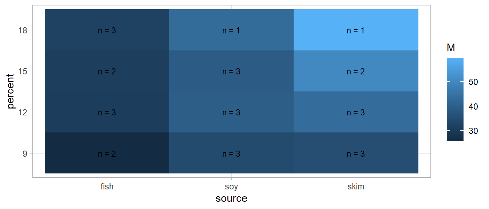

Estimated marginal means (EMMs) are the marginal means of the predicted values from a reference grid. Data set pigs shows the result of an observational study of the leucine concentration in 29 pigs whose diets differed in to attributes: source (fish, soy, milk) and protein percent (9, 12, 15, 18). The heat map below shows how concentration increase from left to right on the sources, and with higher percentages of protein.
Show the code
data(pigs, package ="emmeans")pigs <- pigs %>%mutate(percent =factor(percent))pigs %>%summarize(.by =c(source, percent), M =mean(conc), n =n()) %>%ggplot(aes(x = source, y = percent, fill = M)) +geom_tile() +geom_text(aes(label =paste("n =", n)))

This data exhibits Simpson’s paradox: For each source, concentration increases with percent. Yet, they have different base levels and numbers of observations, so the marginal means actually decrease at percent 18. The culprit is the over-weighted fish at percent 18.
This Very statisticious blog post is helpful. I also worked through the emmeans vignettes on CRAN.
Source Code
```{r include=FALSE}library(tidyverse)library(tidymodels)library(janitor)library(emmeans)```# Estimated Marginal Means {#EMMs}Estimated marginal means (EMMs) are the marginal means of the predicted values from a reference grid. Data set `pigs` shows the result of an observational study of the leucine concentration in 29 pigs whose diets differed in to attributes: source (fish, soy, milk) and protein percent (9, 12, 15, 18). The heat map below shows how concentration increase from left to right on the sources, and with higher percentages of protein.```{r}data(pigs, package ="emmeans")pigs <- pigs %>%mutate(percent =factor(percent))pigs %>%summarize(.by =c(source, percent), M =mean(conc), n =n()) %>%ggplot(aes(x = source, y = percent, fill = M)) +geom_tile() +geom_text(aes(label =paste("n =", n)))```This data exhibits Simpson's paradox: For each source, concentration increases with percent. Yet, they have different base levels and numbers of observations, so the marginal means actually *decrease* at percent 18. The culprit is the over-weighted fish at percent 18.```{r collapse=TRUE}pigs %>% summarize(.by = c(source, percent), M = mean(1/conc)) %>% pivot_wider(names_from = percent, values_from = M)pigs %>% mutate(source = "Total") %>% summarize(.by = c(source, percent), M = mean(1/conc)) %>% pivot_wider(names_from = percent, values_from = M)``````{r}# Fit a modelmdl <-linear_reg() %>%fit(inverse(conc) ~ ., data = pigs) %>%extract_fit_engine()mdl %>%emmeans("percent")# Specifying `weights` brings you back to the ordinary marginal means.mdl %>%emmeans("percent", weights ="cells")```:::rmdnoteToday we're talking about pigs.:::This section is an overview of estimated marginal means, and its implementation in in the **emmeans** package. ```{r}pigs```## ReferencesThis [Very statisticious](https://aosmith.rbind.io/2019/03/25/getting-started-with-emmeans/) blog post is helpful. I also worked through the **emmeans** vignettes on [CRAN](https://cran.r-project.org/web/packages/emmeans/).